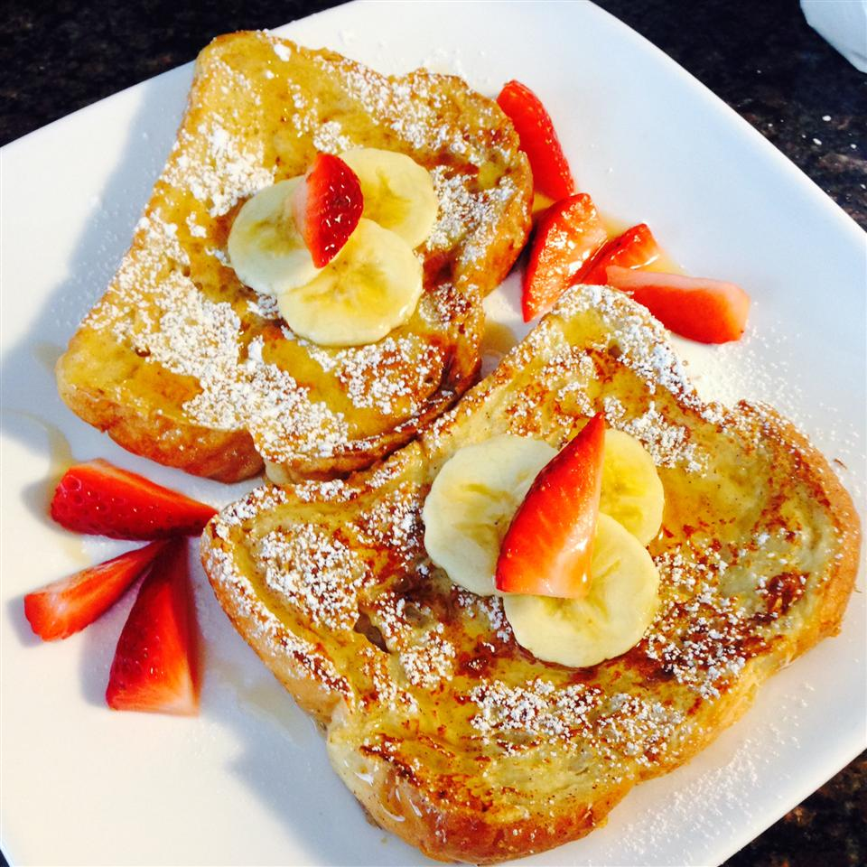

Fluffy French Toast

Description
A different french toast recipe which uses flour. It was given
to some friends of the author they all like it more than their
usual french toast.
Recipe yields 12 servings
Ingredients
- ¼ cup all-purpose flour
- 1 cup milk
- 1 pinch salt
- 3 eggs
- ½ teaspoon ground cinnamon
- 1 teaspoon vanilla extract
- 1 tablespoon white sugar
- 12 thick slices bread
Steps
- Measure flour into a large mixing bowl. Slowly whisk in the milk. Whisk in the salt, eggs, cinnamon, vanilla extract and sugar until smooth.
- Heat a lightly oiled griddle or frying pan over medium heat.
- Soak bread slices in mixture until saturated. Cook bread on each side until golden brown. Serve hot.
Back to Recipe List